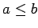
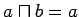
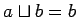

Inhalt Index DeskTop Bronstein

 Algebra und Diskrete Mathematik Boolesche Algebren und Schaltalgebra
Algebra und Diskrete Mathematik Boolesche Algebren und Schaltalgebra


Jeder BOOLEschen Algebra B läßt sich eine Ordnungsrelation in B zuordnen: Dabei wird  genau dann gesetzt, wenn  gilt (oder gleichbedeutend dazu, wenn  gilt).
Somit läßt sich jede endliche BOOLEsche Algebra durch ein HASSE-Diagramm darstellen.